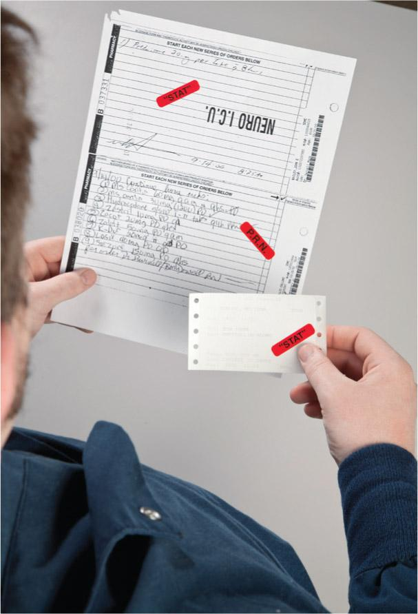
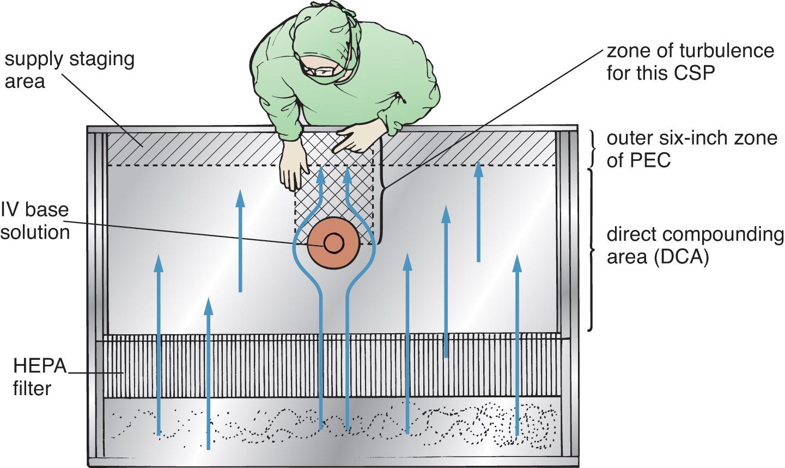
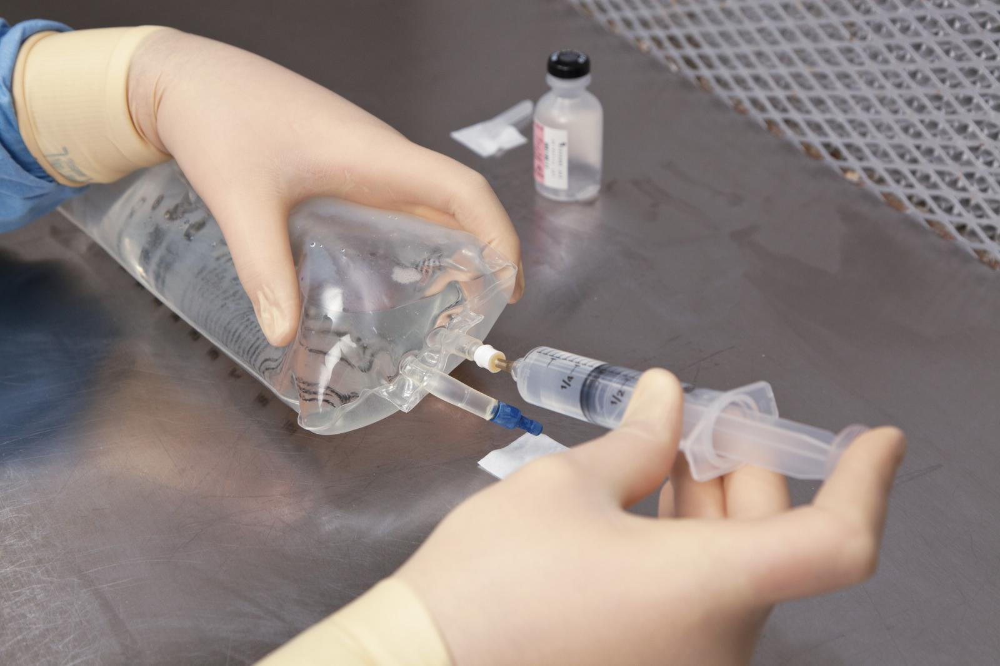
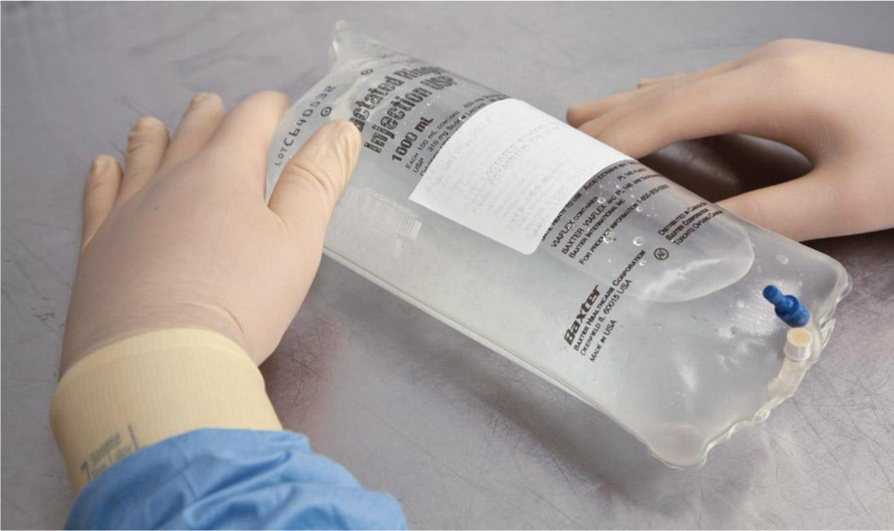

Part 2: Training
10.8 Preview the Procedural Lab
Now that you, as a sterile compounding student, have a basic understanding of the components and critical sites of the supply items used in LVP preparation, you have the opportunity to preview—and subsequently perform—the sterile compounding of an LVP using aseptic technique.
First, read the Preview the Procedural Lab section. Then carefully read each step of the Procedural Lab section. Next, reinforce your understanding by watching the demonstration video. Once in the lab, your instructor will demonstrate the procedure, and then you will perform the procedure by following the steps in the Procedural Lab section. After sufficient practice, you will complete the competency assessment that will be observed by your instructor.
Note: This procedural lab requires the use of a horizontal laminar airflow workbench. For pharmacies that do not have this type of PEC, sterile compounding personnel should consult the Instruction Guide provided by the PEC’s manufacturer or their facility’s SOPs to determine which procedures may need to be adjusted to suit their PEC.
Anteroom Preparatory Procedures
For the purposes of this lab, you will prepare for the sterile compounding process in the anteroom. In practice, you may perform some of these preparatory procedures before entering the anteroom, depending on a facility’s SOPs. The anteroom provides a transition space for implementing the procedures discussed in Chapters 5–9 of this textbook, including:
- verifying the CSP label against the medication order
- performing pharmacy calculations to determine type, size, and number of supply items needed
- gathering and staging of supplies
- performing hand hygiene and garbing procedures.
Verifying the CSP Label
The first step in the preparation of an LVP is verification of the CSP label. Although in some facilities this step is performed by a pharmacist, it is considered best practice to have both a pharmacist and a sterile compounding technician perform this task. Implementing this double-check system helps to reduce the likelihood of a medication error.
With that in mind, you should compare the medication order to the CSP label to verify that the following items match exactly: the name, room number, and ID number of the patient; the name, strength, and amount or quantity of the drug or additive; the name, concentration, and volume of the base solution; and the designated IV flow rate or administration time. (For additional assistance in reading and understanding medication orders, labels, and common abbreviations, refer to Chapter 6 and Appendix A of this textbook.)

Workplace Wisdom
Sterile compounding personnel must compare a CSP label and a print medication order or, more commonly, an electronic medication order. An electronic medication order is entered by a prescriber using either a facility’s computerized provider order entry (CPOE) system or electronic prescribing (e-prescribing).
During verification of a CSP label, sterile compounding technicians need to have open communication with a pharmacist. Personnel must be vigilant and note any inconsistencies during their comparison of the CSP label and the electronic medication order. Any discrepancies must be communicated to a pharmacist. Depending on a facility’s SOPs, this step may or may not be performed by the individual doing the compounding.
Personnel also need to be aware that the verification of a CSP label and medication order, as well as other types of verification checks prior to the start of the sterile compounding process, vary among states. Some state boards of pharmacy (BOPs) require a pharmacist to verify the accuracy of labels, calculations, and ingredients selected by sterile compounding technicians prior to personnel preparing the CSP; other state BOPs allow these verification checks to be performed by a qualified technician. Still other BOPs have no such requirements. These verification checks, referred to as in-process checks or stage checks, have been found to reduce errors associated with order entry and product selection. Sterile compounding personnel should refer to their facility’s SOPs for guidance on this practice.
Performing Pharmacy Calculations
Once you have verified the accuracy of the CSP label, you need to determine the type, size, and number of supply items needed for the procedure. Using information gleaned from the CSP label and the ingredient label on each medication or additive, calculate the desired volume of each additive or ingredient to be used in the procedure. The desired volume is the volume that you must withdraw from the vial to deliver the dose ordered by the prescriber. (For additional assistance on performing calculations, refer to Chapter 7 of this textbook.)
Gathering and Staging Supplies
After performing the calculations, place the CSP label into a small plastic bag, place the medication order into a large plastic bag, and seal both bags. You should then gather the necessary supplies, including an appropriately sized syringe for the desired volume needed, and obtain a transport vehicle—such as a stainless-steel cart, a basket, or a tray—to facilitate an easy transfer of supplies into and out of the buffer room.
With the supplies and transport vehicle at hand, wipe down the exterior surface of every supply item, as well as the transport vehicle, using low-lint wipers saturated with a sporicidal agent, a disinfectant registered with the US Environmental Protection Agency (EPA), or sterile 70% IPA. Agents must dwell on the surface of the item for the labeled contact time or, if using sterile 70% IPA, allowed to dry thoroughly. This step must be performed before placing items into a pass-through (unless package integrity would be damaged) or bringing items into the clean side of the anteroom or within the perimeter of the segregated compounding area (SCA). Many supply items are provided by their manufacturers as individually wrapped items in a protective outer covering, sometimes called a dust cover. To disinfect these supply items, wipe down the entire exterior surface or dust cover of each supply item individually. Be sure to also wipe down the exterior surfaces of the plastic bags containing the medication order and CSP label. After wiping the exterior surface of each item, place the item into the transport vehicle. Discard used wipers into a waste container.
Donning Garb
Now that you have assembled and wiped the exterior surfaces of necessary supplies, you must don garb, a requirement for working in the buffer room. Before donning garb, ensure you are wearing close-toed shoes and either a clean scrub uniform or other approved, lightweight, nonshedding clothing and that you have removed cosmetics, jewelry, and other items prohibited in the sterile compounding area. Then don shoe covers; a head cover and, if necessary, a facial hair cover; a face mask; and a gown. Next, apply an alcohol-based hand rub to all surfaces of your hands and fingers and allow these surfaces to dry before donning sterile gloves. (Note: This procedure may also be performed in the buffer room.)
Due to time constraints, you will not perform hand-washing procedures during this procedural lab. Keep in mind that, in sterile compounding practice, handwashing is mandatory and must be performed prior to donning sterile gloves. If you are performing this procedural lab in a working buffer room, you must perform all hand hygiene and garbing procedures before entering the buffer room. (For additional assistance on the procedure for donning garb, refer to Chapter 8 of this textbook.)
Buffer Room Preparatory Procedures
When preparing LVPs for patient administration, sterile compounding personnel must diligently follow established buffer room procedures. These procedures, discussed in Chapters 8 and 9, may include sanitizing hands with an alcohol-based hand rub and donning sterile gloves and must include cleaning and disinfecting the PEC.
Due to time constraints, you will not perform PEC cleaning and disinfection procedures during this procedural lab. Keep in mind that, in sterile compounding practice, PEC cleaning and disinfection procedures are mandatory and must be performed prior to sterile compounding procedures and at intervals prescribed by USP <797>.
Arranging and Preparing Supplies in a PEC
Upon entering the buffer room, place the transport basket or tray onto a clean table or cart. If the transport vehicle used is a cart, wheel it so that it is positioned away from the PEC’s prefilter. If not performed previously, sanitize your hands with an alcohol-based hand rub, allow your hands to dry thoroughly, and then don sterile gloves.
Next, wipe your sterile gloves with sterile 70% IPA and allow your gloved hands to dry thoroughly. Then, use low-lint wipers to wipe the exterior surfaces of supply items with sterile 70% IPA and allow the items to dry before introducing the items into the PEC. If a supply item is in a sealed container to maintain its sterility, the sterile item should be removed from the container as the item is introduced into the PEC and should not be wiped with sterile 70% IPA.
Place small supply items—such as the vial, needle, syringe, sterile 70% IPA swabs, and tamper-evident, sterile, adhesive seals—in the outer six-inch zone of the PEC, which is used as a staging area prior to bringing the supplies into the direct compounding area (DCA) of the PEC (see Figure 10.5). Alternatively, small supply items may be placed to the left or right of the DCA.

Before placing the IV base solution in the DCA of the PEC, remove the IV bag’s dust cover. To do so, locate the tear line on the dust cover and tear open the outer packaging along this line. Remove the IV base solution from the dust cover and discard the cover into an appropriate waste container. Then place the IV bag into the DCA of the PEC, or at least six inches inside the PEC. Be sure to position the injection port of the IV bag (in this case, a tail injection port) so that it receives uninterrupted airflow from the HEPA filter.
LVP Compounding Procedure
With the supply items arranged within the PEC, you are ready to begin the LVP compounding procedure. Remember that as you bring each small supply item into the DCA, it should be placed so that its critical site(s) receives continuous airflow from the HEPA filter at the back of the PEC. Also, be sure that the syringe and uncapped needle are handled in such a way as to avoid touch contamination and shadowing of the syringe tip and the needle hub. (For additional information on the PEC’s components and airflow movement, refer to Chapter 4 of this textbook.)
Keeping the critical sites in mind, start the procedure by bringing the vial containing the additive into the DCA. Remove the flip-top cap, placing the cap into the discard pile. Position the vial stopper so that it receives uninterrupted airflow from the HEPA filter. Pick up a sterile 70% IPA swab package, move it into an area of the DCA so that it receives uninterrupted airflow from the HEPA filter, and carefully tear open the package. Place the empty swab package into the discard pile. Then wipe the vial stopper and place the used swab into the discard pile.
Next, bring the syringe into the DCA and carefully remove the outer wrapper of the syringe without touching or shadowing the syringe tip. Grasp the barrel of the syringe and avoid placing the syringe onto the PEC’s work surface as this action could cause it to become contaminated. Place the syringe wrapper into the discard pile. If there is a cap on the tip of the syringe, carefully remove it and place it into the discard pile. Without touching or shadowing the syringe tip, position the syringe in your hand to allow adequate airflow to the syringe tip and then open the needle and hold it by its cap. Be sure to avoid touching or shadowing the needle hub. Using a twisting motion, attach the capped needle hub to the Luer-lock syringe tip. Temporarily place the needle-and-syringe unit onto the PEC’s work surface within the DCA.
Then open a new, sterile 70% IPA swab package, remove the swab, and place the IPA swab on the PEC’s work surface, within the DCA. Pick up the syringe and pull down on the flat knob of the syringe plunger to draw a volume of air into the syringe that is equal to the desired volume of the additive. This desired volume was determined by your earlier mathematical calculation. Holding the syringe by the barrel, carefully remove the needle cap, and place the cap onto the IPA swab. Be sure to have the open end of the cap facing the PEC’s HEPA filter to maintain adequate airflow over the cap. This careful placement of the needle cap ensures the cap’s sterility, which is critical when the compounding procedure requires personnel to recap the needle.
Grasp the barrel of the syringe between your thumb and forefinger, as you would a pencil or dart, and rotate the barrel so that the needle bevel is pointed up toward the ceiling. Brace the vial against the PEC’s work surface and place the needle tip, bevel up, onto the vial stopper. Insert the needle into the vial using a slight upward rotation of the wrist. Keep the tip of the needle in contact with the vial stopper at all times to avoid coring. There should be a very slight bend to the needle as it penetrates the vial stopper (see Figure 10.6).
Invert the vial and inject air into the vial using the milking technique, thereby creating positive pressure that forces a volume of fluid from the vial into the syringe. Repeat this procedure until you have withdrawn a volume of fluid from the vial into the syringe that equals approximately 1 mL more than the desired dose volume.
Without removing the syringe from the vial and without blocking airflow from the HEPA filter to the critical sites of the needle-and-syringe unit or vial, brace the syringe against your palm, and tap the barrel of the syringe to force air bubbles up toward the needle. Alternatively, you may carefully tap the syringe against the PEC’s work surface. Once all of the air bubbles from the syringe have gathered at the tip of the syringe, push up on the flat knob to expel the air and any extra fluid back into the vial, until the desired volume (determined by your earlier calculations) of bubble-free fluid remains in the syringe.
Return the vial, with syringe attached, to the PEC’s work surface. Grasp the syringe at the barrel and carefully pull the needle-and-syringe unit from the vial. Carefully recap the needle by holding the syringe by the barrel with your one hand and the needle cap with your other hand. Then carefully slide the needle cap over the needle until you hear a click, indicating the cap has attached to the syringe tip.
View long description Hide description
The labels are as follows: slight downward pressure on the needle, slight bend of needle, slight upward rotation of syringe, needle bevel (pointed up), and vial stopper.
Arrange the vial, the filled and capped syringe, and the IV bag containing the base solution within the DCA to await a verification check by a pharmacist or your instructor. Make sure that the CSP components are positioned so that their readings can be quickly and easily observed by the checker. (You may need to temporarily adjust the positions of the items.). The IV bag should be placed face up on the PEC, so the pharmacist or instructor can easily read the preprinted information on the face of the bag. Turn the vial and syringe so that the checking pharmacist or instructor can easily read the vial label and syringe volume. Place the medication order and CSP label, both in their plastic bags, in front of the CSP ingredients, in the outer six-inch zone of the PEC. Be sure to avoid the discard pile area.
Next, ask for a verification check by the checking pharmacist or your instructor. Once the checker has verified that you have drawn up the correct volume of the additive, wipe your gloved hands with sterile 70% IPA if they have left the PEC. If you had to adjust the positions of the items for the verification check, you may have interrupted airflow to a critical site. Reposition the item(s) so that the critical sites receive uninterrupted airflow from the HEPA filter, and wipe any affected critical site with a new, sterile 70% IPA swab prior to injection.
Workplace Wisdom
Sterile compounding personnel should be aware that there is an important shift in pharmacy practice regarding the verification check of CSP ingredients. In the past, personnel would follow the syringe “pull-back” method by drawing up each medication or additive needed, adding the ingredient to the final container, and then pulling back the needle-and-syringe unit to the volume of drug or diluent used in the manipulation. The pharmacist performing the verification check would then determine the accuracy of ingredients by observing the indicated “pull-back” volume of each syringe. Some pharmacies employ another proxy method of verification where the sterile compounding technician simply writes on the CSP label or medication order the amount of each ingredient they injected into the CSP. In cases where the ingredient amount is automatically printed on the CSP label, the technician simply circles the amount on the label.
In 2016, the Institute for Safe Medication Practices (ISMP) determined that all “proxy methods” of verification checking are potential sources of dangerous medication errors. Between 2004 and 2011, ISMP reported serious compounding errors that were attributed to the use of the syringe “pull-back” method. For that reason, the ISMP recommends an alternative—and safer—method of verification of CSP ingredients in its online publication 2018–2019 Targeted Medication Safety Best Practices for Hospitals. Best-practice standards now dictate a manual or an automated technology verification of ingredients prior to the addition of each CSP ingredient in the final container. This practice requires that sterile compounding personnel recap the needle-and-syringe unit containing the desired drug or diluent volume and place the filled syringe next to the drug product inside the DCA for a verification check. During the recapping of the needle-and-syringe unit, personnel should exercise caution to avoid a needlestick injury. ISMP continues to identify the “proxy method” of syringe pull-back as one of the top ten causes of medication errors in hospitals. While the number of pharmacies employing this dangerous practice is decreasing, it is important to remain vigilant in employing a verification check of all ingredients prior to adding them to the base container or solution.
To read the ISMP’s 2018-2019 Targeted Medication Safety Best Practices for Hospitals in its entirety, personnel should visit the following site: https://SterileComp2.ParadigmEducation.com/TargetedMed.
With the IV bag repositioned so that the tail injection port receives uninterrupted airflow, bring a new, sterile 70% IPA swab package into the DCA. Position the package so that it receives uninterrupted airflow from the HEPA filter, and carefully tear open the package. Remove the swab and place the empty swab package into the discard pile. Wipe the tail injection port of the IV bag and then place the used IPA swab onto the PEC’s work surface, directly under the injection port.
Remove the needle cap and place it onto the IPA swab that you previously used to rest the cap. Grasp the syringe at the barrel, holding it as you would a dart. Then, with your other hand, stabilize the tail injection port of the IV bag. While maintaining a clear airflow to the area where the injection port and needle come into contact, carefully insert the needle into the injection port of the IV bag. The needle should be inserted straight into the injection port without regard to the position of the needle bevel. Exercise caution to avoid puncturing the sidewall of the injection port during needle insertion.

Once the needle is completely inserted into the injection port, push up on the flat knob of the plunger to inject the additive into the IV bag. Take care not to touch or shadow the injection port or needle at any time during the procedure. Grasping the syringe only at the barrel, remove the syringe with attached needle from the IV bag. To avoid an inadvertent needlestick, do not recap the needle. Immediately discard the needle-and-syringe unit into the sharps container.
Spray or wipe gloves with sterile 70% IPA and allow to dry thoroughly. Open a new, sterile 70% IPA swab package, remove a swab, and wipe the injection port of the IV bag. Then affix a tamper-evident, sterile, adhesive seal over the injection port. Hold the IV bag up toward the light and squeeze it, examining the bag for leaks, precipitates, or evidence of incompatibility. If you observe any of these signs, you must dispose of the CSP and repeat the entire compounding procedure. (Refer to your facility’s SOPs for guidance on the appropriate follow-up actions.)
Provided the IV bag is free of these problems, label the CSP by affixing the adhesive label backing to the face of the IV bag so that it does not come into contact with the injection port or obscure the graduation markings on the IV bag.

Finally, dispose of the waste from the discard pile, as well as the needle cap and the used IPA swabs, into the waste container. Place the CSP and the vial containing any remaining medication into the transport vehicle and return these items to the anteroom. Once there, use a pen to mark the beyond-use date (BUD) on the vial and return it to its proper storage location. Record the BUD and your initials on the CSP label. If you performed PEC cleaning and disinfection procedures for this lab, complete the required PEC cleaning and disinfection checklist. Then remove your garb in the reverse order it was donned. (For additional assistance on the removal of garb, refer to Chapter 8 of this textbook.)
Place CSP into an appropriate storage location or send the CSP for administration to the patient.